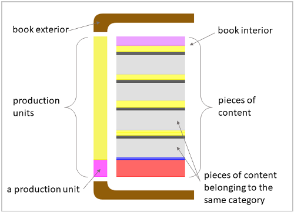
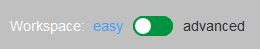
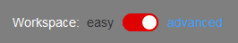
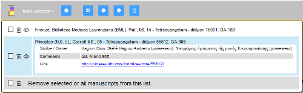
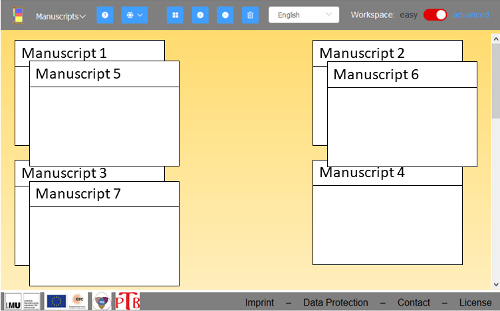
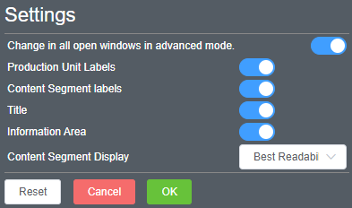
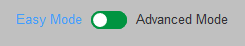
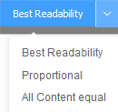
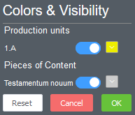

You can also read the following information in PDF format: Download (PDF)
What is StruViMan?
A growing number of manuscripts are available digitally online. This offers new opportunities for scholars to engage with manuscripts and their contents. Since ancient codices are complex objects and their current state is often the result of several layers of production, it is useful to explore their dimensions in a way that goes beyond image and text. Differences in production units, material support, quires and scribes (to name but a few) can all provide insight into the development of the codex as an evolving object over time.
The Structural Visualization of Manuscripts (StruViMan) is a web service that was created as a practical extension of the Paratexts of the Greek Bible Project, an ERC project based at the LMU in Munich. Using mainly digital reproductions (such as those available through the NTVMR at University Μünster), the team carefully reviews each New Testament manuscript and the presence of biblical texts and paratexts is documented in a database.
StruViMan takes these manuscript data and transforms them into a visual representation that reveals a manuscript’s structure at a glance. The visualization provides information related both to the codex’s chronological development (here in the form of the different production units) and to the structural aspects of its contents (in this model, these are arranged by category). Further information is accessed easily by clicking on the relevant parts of the visualization.
The visualization is currently accessible via three variants:
- On the results page of a manuscript on the website Paratexts of the Greek Bible under the item Visualization of this manuscript.
- On the results page of a manuscript on the website Pinakes top left under the item Visualiseur.
- Click directly here on the StruViMan website on the small graphic in the upper right corner. There you will find a few selected manuscripts.
Technical Concept
The StruViMan web service is on the one hand connected to the Pinakes project and on the other hand to the PtB project. Both projects use the same database, but sometimes show different aspects of a handwriting.
The PtB project is currently under construction. After entering a dictyon number, selected details of the respective handwriting are displayed (example). There you will find the link to the visualization of the handwriting:

On the Pinakes website users have also the opportunity to view detailed manuscript data. On Pinakes page associated with a particular manuscript there are several options in the upper right corner:

By clicking on the "Visualiseur" option, users will be redirected to the StruViMan web service in a new tab in the same browser window, analogously also for the PtB project. The two tabs are linked to a SessionID. Further manuscripts are thus also displayed in the currently open StruViMan tab. If several StruViMan tabs or windows are open, they will all appear the same (or, at the latest, after refreshing the page).
The implementation of StruViMan was based on the latest web programming standards: Vue.js, a JavaScript web framework, HTML5 and CSS3. The visualization of StruViMan is a vector graphic (SVG).
The data from the database is stored in an XML file using PHP and an XML schema (XSD) and sent to our server via JSON (server platform: Node.js).
The server-side component is necessary because it is not hosted on the same server as the database from Pinakes and PtB and it is therefore easier for the Struviman server to collect and parse the XMLdata from the database before forwarding it to the browser. As such, it can also be easily extended to interact with other systems or servers to provide similar visualization functionality. If you are interested, please get in touch with one of the contact persons (information available in the bar at the bottom of the screen).
In the future it is also planned to make the software publicly available as open source.
Design
The visualization represents the view of a book on its side.

Production units: the spine of the book in this example consists of a bar divided into two differently-colored sections. It shows how many production units are present in the manuscript and at what point in the manuscript they occur.
Pieces of content: the pages of the book not only give an overview of the pieces of content inside the codex, but also show how much space each item occupies. The colors show which pieces of content are part of the same category. It is also easy to see which sections of the book belong to the same production unit.
Different production units are distinguished by their different colors. The same color, on the other hand, is assigned to content elements which belong to the same category. For example, the content elements belonging to the category Imagines all receive the color black. The color schemes of production units and content elements never overlap. In Advanced Mode all colors can be individually adjusted.
Main Window
There are two different workspaces, each offering a specific set of options:

The Easy Workspace’s fixed settings make it especially suitable for new or casual users. This mode is active when the switch in the upper right-hand corner of the main window is set to “Easy” and the frame takes on a light gray color.

In the Advanced Workspace there is an extended range of options for adjusting the graphic. It is active when the switch is set to “Advanced” and the frame takes on a dark gray color.
Options in the Easy Workspace

All manuscript present in a given session are listed top left in manuscripts. A single click on a title opens an information window underneath it with basic information about the manuscript. A double click on the title opens or focusses the relevant visualization. Additionally, one can click on the following icon to open the visualization of a manuscript.
Manuscripts can be removed from the manuscript list in the following ways:
- Single manuscripts can be removed by clicking the Trash icon on the left side next to the title.
- If one checks one or more of the checkboxes located next to the title and then clicks on the Trash icon in the last row of the manuscript list, multiple manuscripts will be removed at the same time.
- By clicking the checkbox in the last row of the manuscript list and subsequently clicking on the Trash icon next to it, all manuscripts are removed from the list.
The following Menu Options appear when more than one manuscript is loaded into the list (except the help button, which is always there):

Options in the Advanced Workspace
In addition to all the options of the easy workspace, more settings are available here that change the display of the visualization. These options are also available in the manuscript window (with the exception of the first option), where they can be set individually for each manuscript.

- Change in all open windows: if any changes are made in the settings menu, this switch determines whether these changes will be applied both to all open manuscripts as well as any manuscripts which may be opened later (turn the switch on) OR only to any manuscripts which may be opened later.
- The four switches underneath allow the user to show or hide different descriptive labels and text areas within the visualization:
- Production Unit Labels: the number and date of each production unit.
- Content Segment Labels: the labels which identify the contents.
- Title: the manuscript shelfmark and the title it has been given in Pinakes.
- Info Area: the box below the visualization which changes according to which part of the visualization the user clicks on.
- Content Segment display: this allows the user to determine how the content segments are displayed:
- Best Readability: logarithmic adjustment of the segment size (according to the formula ln(a+1) small segments are enlarged, large segments are decreased in size). Parallel contents are presented as such.
- Proportional: the number of folios/pages occupied by the content elements determines the size of the segments. Parallel contents are presented as such.
- All Content equal: all segments are displayed equal in size. Parallel content elements are not displayed as such, but all elements are displayed serially one after the other.
All changes are immediately visible and can be accepted (OK) or rejected (Cancel). Reset returns all setting to their initial position.
Manuscript Window
It is possible to open multiple manuscript windows within the main window. In this way, for example, different manuscripts can be can be compared with each other. The user has the option here to work in two separate modes regardless of what mode is active in the main window (the blue background is the active mode).
 
Why are there two different modes?
StruViMan is designed to be both intuitive and easy to operate for a beginner. Moreover, Easy Mode can provide fast and simple access to the visualizations of various manuscripts without requiring the user to change any settings.
The extended number of options and a greater degree of customizability in the display is what Advanced Mode has to offer users wishing to have greater control over individual aspects of their manuscript visualizations.
Options in Easy Mode
Basic Information:
The manuscript window has a fixed size in Easy Mode and, as such, the window size cannot be altered. Even manuscripts with a large amount of content elements are initially displayed in this standard size. This abbreviated display can be expanded, however, by clicking on the tag labelled “+++” (located underneath the last content element shown in the abbreviated display).
If the user hovers over a content element in the visualization, a pop-up containing the relevant information will appear. A click on an individual element within the graphic causes information from the database relevant to that element to be displayed in the information area below. Clicking on any of the white spaces in the manuscript window results in the display of select information relating to the manuscript as a whole in the information area.
Every time the user switches back to Easy Mode, this acts as a reset for the graphic. The settings chosen in Advanced Mode are then changed back to the main settings.
Description of Individual Functions:
With a click this button, a new window opens where the user can right-click and save the image locally to their computer.
This window can be closed by click on the light gray “x” in the top right corner.
Show or hide Production Unit Labels and Content Segment Labels..
Options in Advanced Mode
Basic Information:
All adjustments made to the settings made in Advanced Mode are preserved, even when the manuscript window is closed (as long as it has not been removed from the manuscript list). The same manuscript can also be opened multiple times in different manuscript windows and the settings can be customized in each of these open windows. Every time the user switches back to Easy Mode, this acts as a reset for the graphic. The settings chosen in Advanced Mode are then changed back to the main settings.
In Advanced Mode the manuscript window size can be adjusted in all directions. So, for example, the size of the Information Area can be adjusted if not all the content is visible (this is done by expanding the window to the right).
Description of Individual Functions:

The first function on the left side allows the user to determine how the content segments are displayed. This option is also available in the Main Window.
- Best Readability: logarithmic adjustment of the segment size (according to the formula ln(a+1) small segments are enlarged, large segments are decreased in size). Parallel contents are presented as such.
- Proportional: the number of folios/pages occupied by the content elements determines the size of the segments. Parallel contents are presented as such.
- All Content equal: all segments are displayed equal in size. Parallel content elements are not displayed as such, but all elements are displayed serially one after the other.
With a click this button, a new window opens where the user can right-click and save the image locally to their computer.
This window can be closed by click on the light gray “x” in the top right corner.
The four switches allow the user to show or hide different descriptive labels and text areas within the visualization:
- Production Unit Labels: the number and date of each production unit.
- Content Segment Labels: the labels which identify the contents.
- Title: the manuscript shelfmark and the title it has been given in Pinakes.
- Info Area: the box below the visualization which changes according to which part of the visualization the user clicks on.
All changes are immediately visible and can be accepted (OK) or rejected (Cancel). Reset returns all setting to their initial position.
Option 1: Here the user can change the colors of the production units (in this example "1.A") as well as the colors of each category (in this example "Testamentum nouum") that occurs in this manuscript. In this way the user can apply their own color concept.
Option 2: The user can also opt to show or hide each production unit and each category. The resulting empty space will then be dynamically filled in by the remaining elements. This function can be used to hide certain categories in the visualization or to show only one production unit.
All changes are immediately visible and can be accepted (OK) or rejected (Cancel). Reset returns all setting to their initial position.